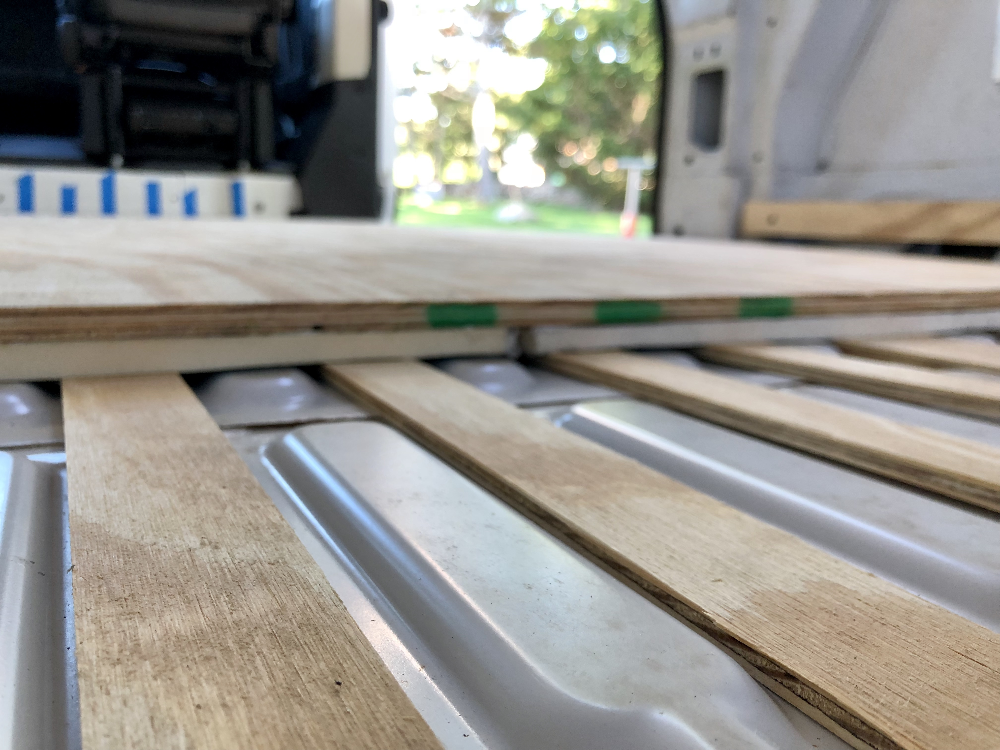
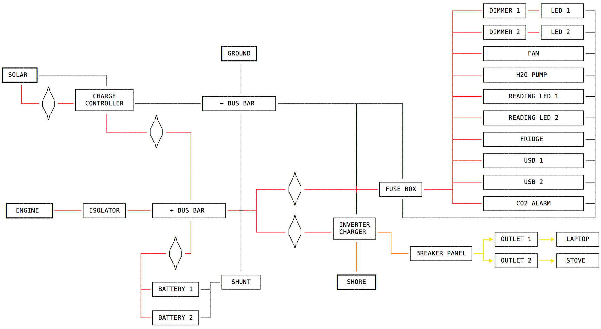

I started the process of converting a 2014 Ram Promaster 159" (3500 EcoDiesel engine) into a living space. I bought the van used with 45k miles on it.
After scrubbing the interior, I installed Rattletrap and furring strips. Rattletrap is a sound deadener, it's the silver stuff plastered all over the walls & ceiling. I had 50 square feet total, which I cut into a bunch of 6x18" strips for the walls, and 2x18" strips for the ceiling. The furring strips (horizontal pieces of wood) are intended to make the sides flush with the frame of the van. This will make installing walls easier.
I installed the first half of the subfloor. The subfloor is comprised of 3 parts: 1/4" plywood strips, 1/2" polyiso insulation, 1/2" plywood boards (in that order, from bottom to top).
The 1/4" plywood strips are intended to make the floor flat, so that the insulation doesn't bend/compress as people walk on it. As you can see, the metal floor is not a flat surface.
I finished the second half of the subfloor. It took a little while to cut out the wheel wells and get the pieces to fit seamlessly.
I took a bunch of measurements to determine the interior layout for the driver's side wall. A queen bed will extend to the left of the image, drivers seat to the right. I'm planning to have ski storage, so that 10x6 compartment in the armoire will extend under the bed all the way to the rear doors (about 80"), which should be large enough to fit 2 pairs of skis.
I also outlined what the wiring will look like. Diamonds denote fuses; heavy borders are energy sources. I used the app Monodraw to do this (I love this product, I use it for wireframing apps as well). I'm not sure if this is right, but it's what I came up with after watching a bunch of YouTube videos. I will run this by an electrician or someone more knowledgeable about this stuff prior to installation.
I also placed a big Amazon order. I bought everything in the wiring diagram, aside from the wires.